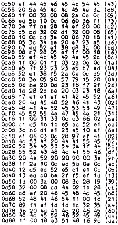
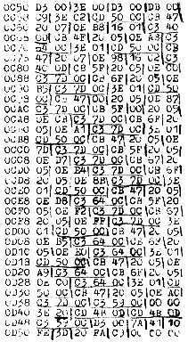

Nascom Journal |
2/81 |
Die eingeklammerten Zahlen beim Hex-Dump geben die Prüfsumme der jeweiligen Zeile an.
Obwohl der Nascom beim Tabulate-Befehl (T) diese Prüfsumme nicht anzeigt, lassen sich Fehler beim Eintippen des Programmes auf andere Weise vermeiden. Dazu führt man den L-Befehl aus und gibt die Zeilen des Hex-Dump einschließlich der Anfangsadresse jeder Zeile so ein, wie sie dastehen. Die Klammern bei der Prüfsumme muß man allerdings weglassen. Hat man keinen Fehler gemacht, wird die Zeile kommentarlos angenommen, sonst wird sie hochgeschoben und kann neu eingegeben werden.

Dieter Thoss
_____________ __
____ Pforzheim
Mit diesem Programm kann auf der Tastatur des Nascom 1 ähnlich wie auf einer Orgel gespielt werden.
Einschränkungen sind der geringere Notenumfang und die Monophonie. D.h., daß immer nur ein Ton erzeugt werden kann, auch wenn gleichzeitig zwei Tasten betätigt werden.
Im Programm werden keine Monitorroutinen benutzt. Das Programm wird bei Adresse 0C59 gestartet. Die Niederfrequenz kann vom Bit 5 des Port 0 abgenommen werden. Ein Interface dazu wurde im Nascom-Journal 6/7 80, Seite 18 beschrieben. Falls Bit 2 verwendet wird, muß der Inhalt der Adresse 0D41 in 04 umgeändert werden.
Die Nascom-ORGEL wurde für Nasbug T2 / T4 geschrieben.
| Seite 4 von 20 |
|---|